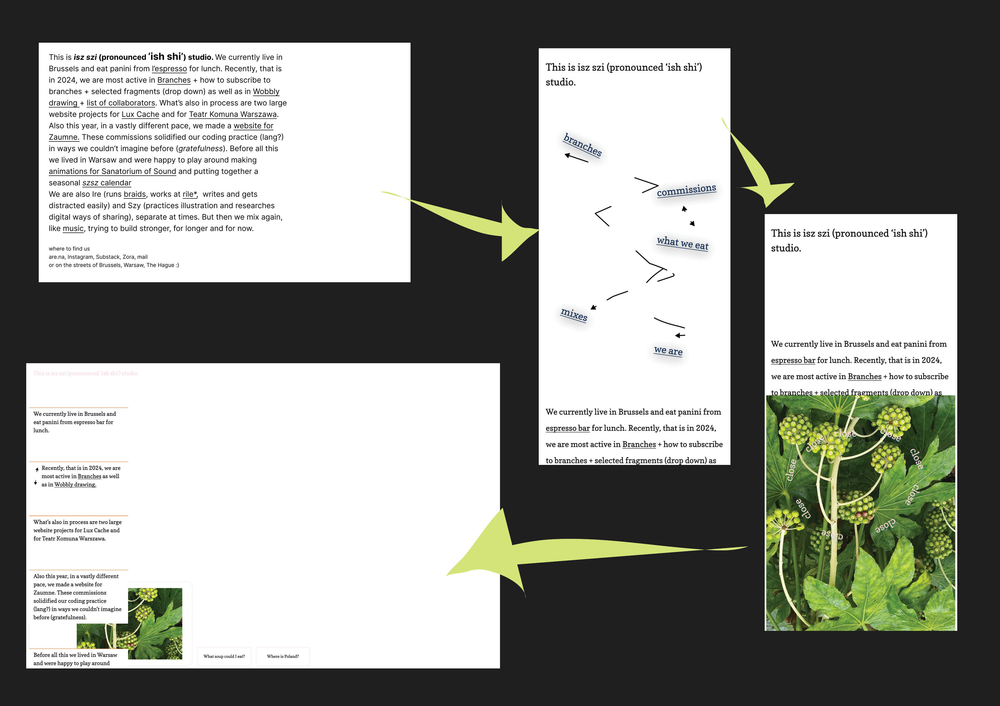
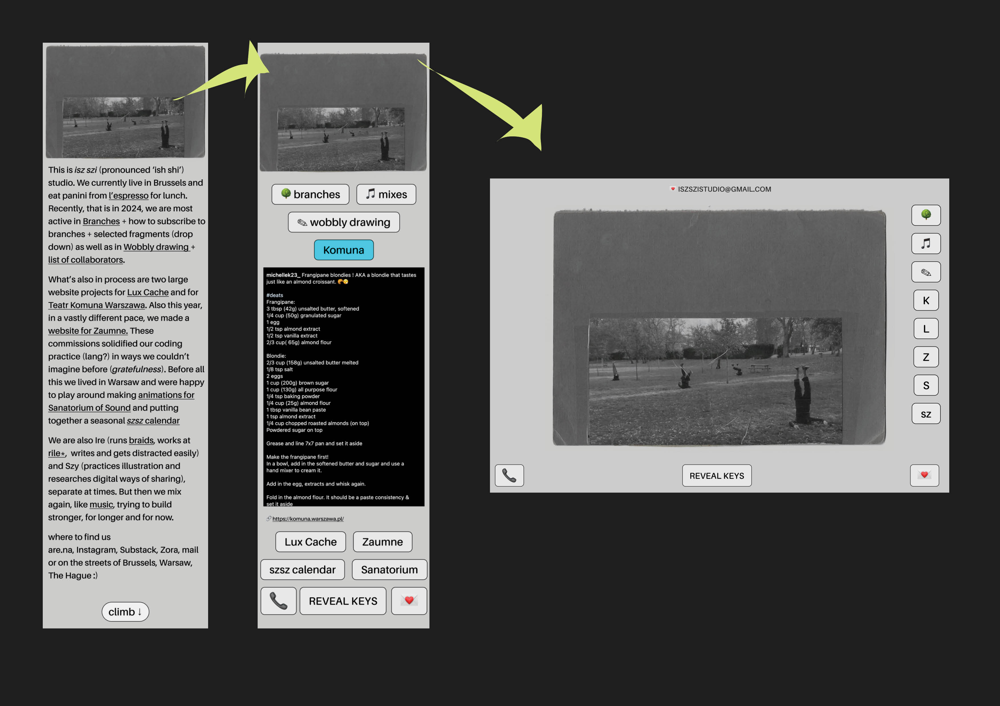
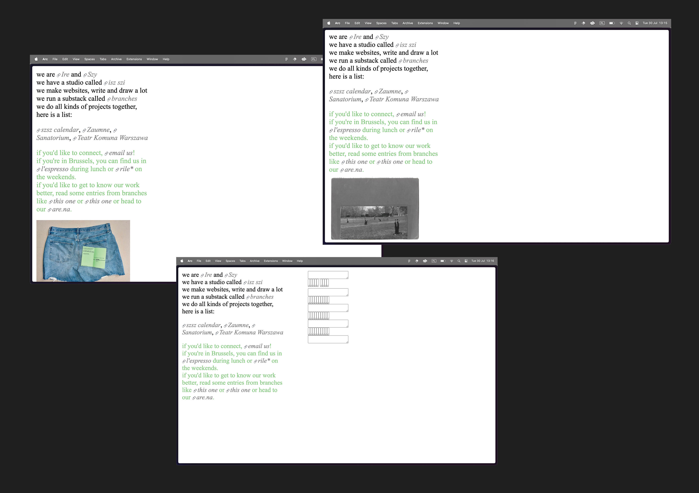

30 July 2024, Nieprzezroczystości [03]
Ślady istnienia, miejsca lekkie
Aby odpowiedzieć na pytanie z zeszłych Nieprzezroczystości “Co znajdzie się na naszej stronce?” przeszliśmy przez małą burzę mózgów. A raczej, przechodzimy bo burza wciąż trwa, szkice powstają, a nas ciągnie to w jedną to w drugą; uświadamiamy sobie zawiłość projektowania i publikowania. Ale! Wyciągnęliśmy trochę myśli spomiędzy naszych głów i wrzucamy mały wpis w temacie stron internetowych, publikowania online, oraz prezentacji twórczości w tej przestrzeni. Nie będzie tu konkluzji, ani ogłoszeń, bardziej zawiła rozkmina ONLINE.
Po pierwsze: Za co kochamy stronki lub Po co jest strona
Strony są pewną formą publikacji, która nigdy nie zostaje ukończona. Są podobne do książek, w tym że ‘trzymają w sobie’ pewne informacje, ale często czujemy, że mają w sobie więcej płynności (jako medium) - są ciągłą zmienną i wymagają podtrzymywania przy życiu, może bardziej z inherentnej potrzeby transformacji niż archiwizacji.
Dobrze nam się myśli o stronach jako domach z relatywnie niskim czynszem. Nawet podstawowe języki kodowania jak html, czy znajomość narzędzi typu wordpress pozwalają na ułożenie fundamentów wystarczających do ‘hostowania’ danego pomysły/projektu/idei. Możliwe, że najbardziej nieprzezroczystym aspektem tego świata jest terminologia, mocno zdominowana przez wyrażenia pochodzące z angielszczyzny, typu ‘hosting’, ‘serwer’ czy ‘cachowanie’.
Często czujemy, że im więcej się wie tym paradoksalnie trudniej się buduje. W stronach nie ma w końcu ograniczeń typu rodzaj papieru lub koszt wydruku. Pracuje się z czasem i energią i to właśnie balansowanie tych dwóch wartości przekłada się na praktykę graficzki lub deweloperki. Łatwo można więc wypalić godziny przepracowując projekt over and over again, albo utknąć w zagmatwanym kodzie.
Tworzenie stron jest nieskończonym środowiskiem nauki, co kochamy, ale co też czasem frustruje. W pracy dla innych stronki wymagają dużo elastyczności ponieważ wyobraźnie potrafią szaleć, ale mimo wszystko każde narzędzie ma swój limit. Strony są też relatywnie nową formą twórczą, dynamicznie rozwijającą się, ale nie wykluczającą wiekowych języków typu html. Html ze względu na swoją leciwości i relatywną prostotę doczekała się rzeczy oddanych fanów, którzy nie przestają spotykać się/pisać/promować tego poetyckiego medium (zobacz np https://html.energy/join.html).
Po drugie: Co wrzucamy na naszą stronę i czego nie chcemy wrzucać
Cele
Brak zdjęć dokumentujących projekty + zabawa + krótkie informacje o isz szi + efekt zaciekawienie + muśnięcie estetyczne + tymczasowe marzenie
Funkcja?
Z tym właśnie jest dużo problemów. Boimy się suchości, nie chcemy za dużo wyjaśniać, ale chcemy istnieć tam w sposób, który oddaje nasze charaktery. Chcielibyśmy podkreślić ciągłość procesów i transformacji w których trwamy, ale nie chcemy być zbytnio zawili, boimy się przekompilowania. Potrzebujemy po prostu własnego kącika, nie uzależnionego od The Big Five.
Proces projektowania
Wizytowka
Zaczęliśmy od pomysłu na stronę-wizytówkę. Inspirowały nas te przykłady: https://andrew-lister.info/; https://npanzer.com/; https://motsuka.com/
Lubimy napotykać się na web-wizytówki innych - są to takie ślady istnienia, lekkie miejsca, trochę jak machanie do kogoś po drugiej strony ulicy. Stronka-wizytówka wymaga dużo pewności siebie ponieważ finalnie decyzji, które tworzą to środowisko jest niewiele. Wymaga więcej ‘nie’ niż ‘tak’; potrzebne jest ostre oko i konsekwentność. Chyba dlatego takie projekty robią wrażenie, są jak dobrze skrojona kurtka, albo mocny sok imbirowy.
Napisaliśmy więc tekst, w który wpletliśmy nasze prace jako linki. Dobrze się na to patrzyło w docs, ale w momencie jak wrzuciliśmy go do figmy, od razu rozproszyliśmy się możliwościami oraz przytłoczyła nas ciężkość tego paragrafu. Zaczęło się więc rozmarzone szkicowanie, którego efekty możecie zobaczyć poniżej (przyznamy, że trochę nam niewygodnie się nimi dzielić, ale zależy nam też na transparentności tego procesu.)
 Linkowanie
Coś co może nam pomóc w myśleniu o funkcjonalności! Linkowanie jest piękna praktyką, która podkreśla ryzomatyczność naszej rzeczywistości. Super przykład od AGF https://www.poemproducer.com/haus.php - strona, która wydaje się być ścieżkami strzałek, mapą, która nie przytłacza = szkicem mapy? Lub tutaj, fajny przykład linkowania paired with hardcore html: https://www.sophie.org.uk/
W końcu rzuciliśmy figmę i otworzyliśmy VSC. Był późny wieczór, Szy zaczął rysować pociąg, który stał się półką na książki. Nic nie wychodziło, aż w końcu uprościliśmy już prosty paragraf i wrzuciliśmy obrazek. W następnych dniach wystylizowaliśmy ten kącik. Na razie wygląda on tak
Ideał
Nasza stronka w najlepszym jej wydaniu jest bardzo zarośniętym drzewem, po którym można się wspinać, jest tam dużo ptaków i robaków, cień, słońce, dużo dźwięku. W drzewie jest też dziura, która prowadzi cię pod ziemię. Pod ziemią gramy dużo muzyki, można tu płakać i odczuwać wibrację otoczenia. Jest tu dużo podziemnych linków. Na drzewie można odetchnąć zimnym, wilgotnym powietrzem i odpocząć. W gałęziach są specjalne zaczarowane rzeźby. One są połączeniem do bliskich nam osób kiedy chcemy wspólnie wejść i posiedzieć na drzewie. Zapamiętują też to co chcą oni na drzewie zostawić, tworząc z nich długi, ciężki, pleciony materiał.
To na pewno nie koniec tego procesu.